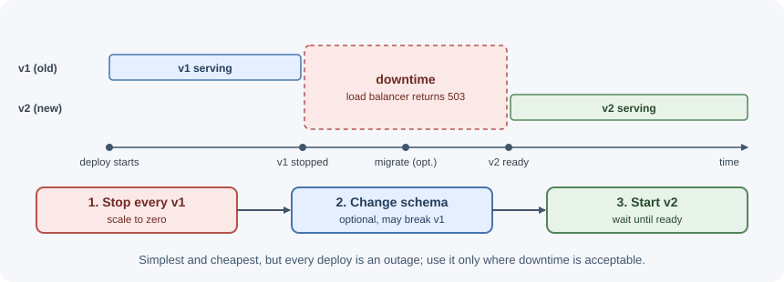
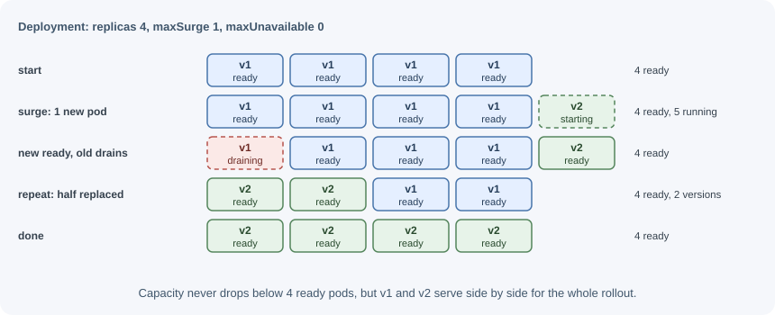
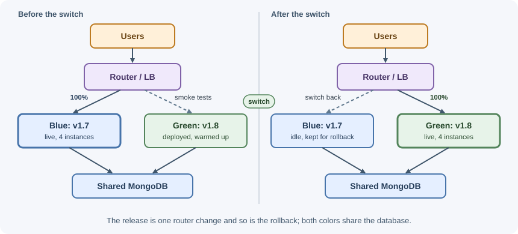
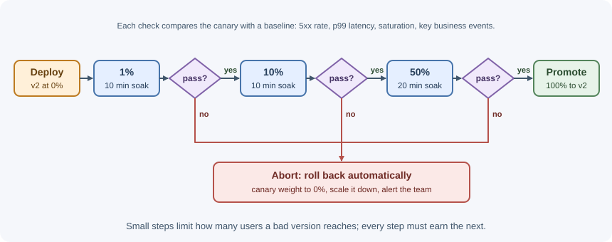

Rolling, Blue-Green, and Canary Deployments¶
These are the four core ways to replace a running version of a service: recreate (stop the old, start the new), rolling (replace instances in batches), blue-green (run a full second environment and switch), and canary (send a small, growing share of traffic to the new version while measuring it). This lesson explains each in depth, how traffic is actually shifted, how canary analysis decides to promote or abort, how a canary differs from an A/B test, and what sessions, caches, queues, and the database need so that two versions can run side by side.
The next lesson, advanced deployment patterns, builds on these with red/black, rainbow, shadow traffic, rings, waves, and cells.
Why it matters¶
The strategy decides three numbers for every release: how long users are affected if the release is bad, how many users are affected, and how fast you can undo it. With recreate, a bad version hits 100% of users until a full redeploy finishes. With a canary at 1%, the same bug reaches 1% of requests for a few minutes before automation pulls it back. The Google SRE Workbook puts it simply: the impact on the error budget is directly proportional to the share of traffic exposed to the defect.
Every strategy except recreate also means two versions run at the same time, which is where most surprises come from: an old instance reading data written by a new one, a cached object in a new format, a queue message the old consumer cannot parse. Choosing a strategy is therefore also choosing which compatibility rules your code and data must follow.
Real-world usage¶
- Martin Fowler, blue-green. The bliki entry BlueGreenDeployment describes two identical production environments with a router in front: you release by switching the router to the idle one and roll back by switching back. It also notes that the database is the hard part, because both environments usually share it.
- Google SRE Workbook, canarying. The chapter Canarying Releases defines a canary as "a partial and time-limited deployment of a change in a service and its evaluation", recommends comparing the canary with a control population at the same time rather than before and after, and advises evaluating user-facing metrics such as error rate and latency instead of noisy ones such as CPU.
- Google and Netflix, Kayenta. The Google Cloud post Introducing Kayenta describes automated canary analysis used with Spinnaker: a small share of traffic goes to the canary, a new baseline cluster runs the old version (to avoid comparing fresh instances with long-running ones), a judge scores each chosen metric statistically, and the 0 to 100 score promotes, escalates to a human, or rolls back.
- Slack. Deploys at Slack describes a canary at about 2% of production traffic, followed by 10%, 25%, 50%, 75%, and 100% while dashboards and alerts are watched.
- AWS CodeDeploy. The predefined
deployment configurations
encode these strategies as products:
CodeDeployDefault.OneAtATimeandHalfAtATime(rolling) for servers, andECSCanary10Percent5MinutesorLambdaLinear10PercentEvery1Minute(canary and linear traffic shifting) for containers and functions.
Popular tools and providers: Kubernetes Deployments, Argo Rollouts, Flagger, Spinnaker with Kayenta, AWS CodeDeploy, Amazon ECS, Istio, Linkerd, Gateway API implementations, AWS Application Load Balancer weighted target groups, Amazon Route 53 weighted records, and the traffic splitting built into Cloud Run and AWS Lambda aliases.
How it works¶
Recreate¶

Recreate stops every old instance, then starts the new ones. In
Kubernetes it is strategy.type: Recreate; on a single VM it is
systemctl restart.
- Downtime: from the moment the last old instance stops until the first new one is ready. For a Node API that connects to MongoDB and warms up, 10 to 60 seconds is typical.
- Advantage: only one version ever runs, so no compatibility rules apply. Recreate is the only strategy that allows a breaking schema change in a single step (inside a maintenance window).
- Rollback: another full recreate with the old version, with another outage.
- Fits: development and test environments, internal tools, batch workers that can pause, single-instance software that cannot run two copies (some licensed or stateful software), and planned maintenance.
Rolling¶

A rolling deployment replaces instances in batches. Two parameters control the pace (Kubernetes names, with equivalents elsewhere):
- maxSurge: how many extra instances may exist above the desired count. Higher surge means a faster rollout and more temporary cost.
- maxUnavailable: how many instances may be missing below the desired count. Zero means full capacity throughout; higher means faster but thinner.
With replicas: 4, maxSurge: 1, maxUnavailable: 0, Kubernetes starts
one new pod, waits until it passes its readiness probe (plus
minReadySeconds), removes one old pod, and repeats. The rollout
depends entirely on readiness: a probe that returns 200 before the app
can serve turns a rolling deploy into a rolling outage.
What rolling does not give you:
- No traffic control. The share of requests reaching the new version equals its share of instances, and the rollout keeps going unless readiness fails. A version that is "ready" but returns wrong answers rolls all the way out.
- No automatic rollback. If new pods never become ready, Kubernetes
stops and marks the rollout as failed after
progressDeadlineSeconds(600 by default), but leaves it there. Someone or something must runkubectl rollout undo. - Mixed versions for the whole rollout. Every request might hit either version, so APIs, events, and schemas must be compatible both ways.
Blue-green¶

Blue-green keeps two complete production environments. One (blue) is live; the other (green) receives the new version, is warmed up, and is tested through a private route. The release is a single routing change; the rollback is the same change reversed.
How the switch is made:
| Switch point | How | Speed and caveats |
|---|---|---|
| Load balancer | Change the listener's target group, or the nginx upstream | Seconds; existing keep-alive connections finish on blue |
| Kubernetes Service | Change the Service selector from color: blue to color: green |
Seconds; endpoints update cluster-wide |
| DNS | Point the record at the green load balancer | Minutes to hours; resolvers and clients cache beyond the TTL |
| Platform | Swap deployment slots (Azure App Service), or move traffic between revisions | Seconds; platform-specific |
Design points:
- Warm-up first. Green must have the same instance count as blue and warm caches and connection pools before the switch, or the first minute after the switch is slow.
- Keep blue for a bake period. Leave blue running (at full or reduced size) for an hour or a day. Rollback is only instant while blue exists.
- The database is shared. Blue and green almost always use the same database, so the schema must work for both versions. Blue-green makes code rollback instant; it does nothing for data.
- Everyone moves at once. Unlike a canary, the switch exposes 100% of users simultaneously. A gradual weighted shift between blue and green turns it into a canary, which the SRE Workbook recommends when possible.
- Background work runs twice. If schedulers or queue consumers run in both colors, cron jobs fire twice and messages are consumed by both versions. Disable schedulers in the idle color or run them separately.
- Cost: double capacity during the deploy, permanently if both colors stay at full size.
Canary¶

A canary sends a small share of real traffic to the new version, compares it with the old version, and increases the share step by step while the comparison stays good. Three decisions define a canary:
- Who goes to the canary. A random share of requests (simplest), a random share of users (sticky, so one user sees one version), staff and internal accounts first, or one region or cell first.
- The steps. For example 1% for 10 minutes, 10% for 10 minutes, 50% for 20 minutes, then 100%. The first step catches crashes and obvious errors; later steps catch problems that appear only under load.
- The analysis. Which metrics, compared with what, and what result means abort.
Canary analysis¶
Good canary metrics are user-facing and attributable to the change:
- 5xx error rate (exclude 4xx caused by clients),
- latency percentiles (p50, p99) for the main endpoints,
- saturation signals that predict trouble (event-loop lag, memory growth, database connection pool waits),
- a few business events (tasks created per minute, sign-ins succeeded).
Compare the canary with a baseline running at the same time, not with yesterday: traffic changes by hour and day. Ideally the baseline is a separate set of old-version instances of the same size and age as the canary, which is what Kayenta does, because freshly started instances behave differently from instances that have run for days.
How much traffic a canary needs: a worked example¶
TaskFlow API serves 200 requests per second with a normal 5xx rate of 0.2%.
Canary at 1% = 2 requests/s; a 10-minute step sees 1,200 requests.
Expected errors if the canary is as good as the baseline: 1,200 x 0.002 = 2.4
Case A: v2 fails 5% of requests -> about 60 errors.
60 versus an expected 2.4 is unmistakable: abort within minutes.
Case B: v2 raises the error rate to 0.4% (doubles it).
Error counts are roughly Poisson, so noise is about sqrt(expected).
To see the extra errors (0.002 n) above 3 standard deviations of
noise (3 x sqrt(0.002 n)):
0.002 n >= 3 x sqrt(0.002 n) -> 0.002 n >= 9 -> n >= 4,500
At 1% (2 req/s): 4,500 / 2 = 2,250 s, about 37 minutes
At 10% (20 req/s): 4,500 / 20 = 225 s, under 4 minutes
The lesson: a small canary catches large regressions quickly and safely; subtle regressions need more traffic or more time. That is why canaries go up in steps, and why analysis tools use statistical tests instead of eyeballing one dashboard.
Traffic shifting mechanisms¶
| Mechanism | How the split happens | Precision | Rollback | Caveats |
|---|---|---|---|---|
| Replica ratio | 1 new pod among 10 gets about 10% | Coarse, in steps of one instance | As fast as scaling | Depends on even load balancing; 1% needs 100 pods |
| Load balancer weights | AWS ALB weighted target groups (weights 0 to 999), nginx weight |
Exact, per request | Seconds | Enable stickiness if users must stay on one version |
| Gateway API | HTTPRoute backendRefs with weight |
Exact, per request (implementation-dependent) | Seconds | Portable across implementations; supports header matches |
| Service mesh | Istio VirtualService weights, Linkerd |
Exact, plus header and cookie targeting | Seconds | Adds a mesh to operate |
| Ingress annotations | Controller-specific canary annotations | Exact | Seconds | Not portable; the widely used ingress-nginx project was retired in March 2026 |
| DNS weighted records | Route 53 weighted records (weights 0 to 255) | Coarse, per resolver | Slow | Resolvers and clients cache beyond the TTL; open connections stay on the old target |
| Platform built-in | Cloud Run revision traffic, Lambda alias weights | Exact | Seconds | Tied to one platform |
DNS deserves a warning: lowering a TTL to 60 seconds does not mean all clients move within 60 seconds. Some resolvers enforce minimum TTLs, operating systems and browsers cache, mobile apps hold connections for long periods, and a client that has an open connection keeps using the old address. DNS is fine for moving whole regions over hours; it is a poor tool for a 1% canary or a fast rollback.
Automatic promotion and abort¶
Tools such as Argo Rollouts, Flagger, Spinnaker with Kayenta, and AWS CodeDeploy run the loop for you: set weight, wait, query metrics, compare with thresholds or the baseline, then continue, pause, or abort. When analysis fails, the controller sets the canary weight back to 0% and marks the rollout aborted. Manual promotion still has a place for the first canary of a risky change, but a human watching dashboards at 2 a.m. is the weakest part of a canary.
A/B testing compared with canary¶
![Diagram: left, a canary asks whether v2 is safe by splitting requests at random, 95% to v1 as baseline and 5% to the v2 canary, measuring 5xx rate, p99 latency, and saturation, and ending within minutes to hours by promoting or rolling back; right, an A/B test asks which variant users prefer by assigning users with a sticky hash of their user ID, 50% to variant A and 50% to variant B, both healthy, measuring conversion, retention, and task completion, and ending after days or weeks by shipping the winner and deleting the loser.](../ab-test-vs-canary.svg)
| Canary | A/B test | |
|---|---|---|
| Question | Is the new version safe to roll out? | Which variant achieves the product goal better? |
| Variants | Old and new version of the software | Two (or more) intended behaviors, both expected to work |
| Assignment | Random requests or users; often not sticky | Sticky per user (hash of user ID), so each user has one consistent experience |
| Metrics | Errors, latency, saturation | Conversion, retention, engagement, revenue |
| Duration | Minutes to hours | Days to weeks, until the planned sample size is reached |
| Ends with | 100% of the new version, or rollback | The winning variant for everyone; the losing code removed |
| Usually implemented with | Traffic routing (load balancer, mesh, rollout controller) | Feature flags or an experimentation platform inside one version |
The two are often confused because both split traffic. They answer different questions, need different statistics (an A/B test needs a sample size calculated in advance and protection against stopping early when results look good), and live in different tools. An A/B test runs inside one deployed version, usually through feature flags; a canary compares two deployed versions.
Sessions, state, and database concerns¶
Running two versions side by side, or switching between them, raises the same questions in every strategy except recreate:
- Sessions. If session data lives in instance memory, any switch logs users out. Store sessions in Redis or a database, or use stateless tokens, and keep the session format readable by both versions.
- Sticky routing. Per-request weights can send one user's requests to both versions in the same minute. If the UI or API changed, enable stickiness (a cookie or user-ID hash) for the canary period.
- Long-lived connections. WebSockets and server-sent event streams do not move when the router changes; they stay on the old version until they close. Plan drain times, or ask clients to reconnect (see rainbow deployments in advanced deployment patterns).
- Caches. If v2 writes cache entries in a new format, v1 may read and
fail on them. Version cache keys (
task:42:v2) so each version reads its own format. - Queues and events. Both versions may consume the same queue, and each may produce messages the other consumes. Add fields, never remove or rename them in one step, and make consumers ignore unknown fields.
- Scheduled jobs. Make sure only one version runs each scheduled job (blue-green idle colors especially).
- Database schema. Every change must be readable and writable by both versions during the rollout and the rollback window. This is the expand-and-contract discipline in zero-downtime database migrations.
- Clients. A browser that loaded the old SPA calls the API after the switch. Keep API changes backward compatible for at least one release.
Pattern chooser¶
![Diagram: a matrix compares recreate, rolling, blue-green, and canary; recreate has downtime, no extra cost, slow rollback by redeploying, exposes everyone, and is lowest complexity; rolling has no downtime, a small surge, medium rollback by re-rolling, exposure growing per batch, and low complexity; blue-green has no downtime, double capacity, an instant switch-back rollback, exposes all users at the switch, and medium complexity; canary has no downtime, small cost, fast rollback by setting the weight to 0%, a small exposure at first, and high complexity because it needs metrics analysis.](../strategy-comparison-matrix.svg)
| Recreate | Rolling | Blue-green | Canary | |
|---|---|---|---|---|
| Downtime | Yes, seconds to minutes | None if readiness is correct | None | None |
| Extra capacity cost | None | Small (surge instances) | Up to 2x during the deploy and bake | Small (a few canary instances) |
| Rollback speed | Slow: full redeploy with another outage | Medium: roll the old version back in | Instant: switch back while blue exists | Fast: weight to 0%, often automatic |
| Risk exposure | 100% of users at once | Grows batch by batch, with no metric gate by default | 100% of users at the switch | 1% first, grows only while metrics stay healthy |
| Complexity | Lowest | Low (default in Kubernetes) | Medium: two environments, switch, warm-up | High: traffic routing plus metric analysis |
| Database and sessions | Breaking changes allowed in one step | Two versions share data throughout: compatible schema, versioned caches, external sessions | Shared database: schema compatible both ways; sessions external; idle color must not run jobs | Like rolling, plus sticky assignment if behavior differs visibly |
When to use and when not to use¶
| Situation | Good fit | Avoid |
|---|---|---|
| Dev or test environment, internal tool | Recreate | Anything heavier |
| Stateless API on Kubernetes, moderate risk | Rolling with good readiness probes | Recreate (needless downtime) |
| Instant rollback required, budget for double capacity | Blue-green | Rolling (slow rollback) |
| High traffic, high cost of a bad release | Canary with automated analysis | Blue-green alone (all users at once) |
| Very low traffic (a few requests a minute) | Blue-green or rolling plus strong tests; canary statistics will be weak | Pure canary analysis |
| Breaking schema change that cannot be split | Recreate in a maintenance window | Any strategy that runs two versions |
| Product question ("does the new flow convert better?") | A/B test behind feature flags | A canary |
Practical examples¶
A rolling update in Kubernetes¶
# k8s/taskflow-api-deployment.yaml
apiVersion: apps/v1
kind: Deployment
metadata:
name: taskflow-api
spec:
replicas: 4
revisionHistoryLimit: 5 # old ReplicaSets kept for rollout undo
minReadySeconds: 10 # must stay ready 10 s before counting
progressDeadlineSeconds: 300 # mark the rollout failed after 5 min
strategy:
type: RollingUpdate
rollingUpdate:
maxSurge: 1
maxUnavailable: 0
selector:
matchLabels:
app: taskflow-api
template:
metadata:
labels:
app: taskflow-api
spec:
terminationGracePeriodSeconds: 30
containers:
- name: api
image: ghcr.io/example/taskflow-api:1.8.0
ports:
- containerPort: 3000
readinessProbe:
httpGet:
path: /readyz
port: 3000
periodSeconds: 5
failureThreshold: 2
livenessProbe:
httpGet:
path: /livez
port: 3000
periodSeconds: 10
failureThreshold: 3
kubectl set image deployment/taskflow-api api=ghcr.io/example/taskflow-api:1.8.1
kubectl rollout status deployment/taskflow-api --timeout=5m
# If it fails or misbehaves:
kubectl rollout undo deployment/taskflow-api
kubectl rollout history deployment/taskflow-api
kubectl rollout status exits non-zero when the progress deadline is
exceeded, so a pipeline can run rollout undo automatically on failure.
Blue-green with two Deployments and a Service selector¶
# k8s/taskflow-api-service.yaml: the live Service selects one color
apiVersion: v1
kind: Service
metadata:
name: taskflow-api
spec:
selector:
app: taskflow-api
color: blue # switch to green to release
ports:
- port: 80
targetPort: 3000
---
# A preview Service always points at green for smoke tests
apiVersion: v1
kind: Service
metadata:
name: taskflow-api-preview
spec:
selector:
app: taskflow-api
color: green
ports:
- port: 80
targetPort: 3000
#!/usr/bin/env bash
# scripts/blue-green-switch.sh: release green, keep blue for rollback
set -euo pipefail
kubectl set image deployment/taskflow-api-green api="$1"
kubectl rollout status deployment/taskflow-api-green --timeout=5m
./scripts/smoke-test.sh http://taskflow-api-preview.default.svc.cluster.local
kubectl patch service taskflow-api \
-p '{"spec":{"selector":{"app":"taskflow-api","color":"green"}}}'
echo "green is live; blue stays up for rollback"
# Rollback: patch the selector back to color: blue
A weighted canary with Gateway API¶
# k8s/taskflow-api-httproute.yaml
apiVersion: gateway.networking.k8s.io/v1
kind: HTTPRoute
metadata:
name: taskflow-api
spec:
parentRefs:
- name: public-gateway
hostnames:
- api.taskflow.example.com
rules:
# Staff can force the canary with a header for manual checks
- matches:
- headers:
- name: x-taskflow-canary
value: "always"
backendRefs:
- name: taskflow-api-canary
port: 80
# Everyone else: 90/10 split
- backendRefs:
- name: taskflow-api-stable
port: 80
weight: 90
- name: taskflow-api-canary
port: 80
weight: 10
Changing the weights (and committing the change, in a GitOps setup) is the whole promotion step. Setting the canary weight to 0 is the rollback.
Automated canary analysis with Argo Rollouts¶
# k8s/taskflow-api-rollout.yaml
apiVersion: argoproj.io/v1alpha1
kind: Rollout
metadata:
name: taskflow-api
spec:
replicas: 10
revisionHistoryLimit: 3
selector:
matchLabels:
app: taskflow-api
template:
metadata:
labels:
app: taskflow-api
spec:
containers:
- name: api
image: ghcr.io/example/taskflow-api:1.8.0
ports:
- containerPort: 3000
strategy:
canary:
canaryService: taskflow-api-canary
stableService: taskflow-api-stable
trafficRouting:
istio:
virtualService:
name: taskflow-api
routes:
- primary
analysis: # runs in the background from step 1
templates:
- templateName: taskflow-canary-health
startingStep: 1
args:
- name: service
value: taskflow-api-canary
steps:
- setWeight: 1
- pause: { duration: 10m }
- setWeight: 10
- pause: { duration: 10m }
- setWeight: 50
- pause: { duration: 20m }
---
apiVersion: argoproj.io/v1alpha1
kind: AnalysisTemplate
metadata:
name: taskflow-canary-health
spec:
args:
- name: service
metrics:
- name: error-rate
interval: 2m
failureLimit: 1
successCondition: result[0] < 0.01
provider:
prometheus:
address: http://prometheus.monitoring.svc.cluster.local:9090
query: |
sum(rate(http_requests_total{service="{{args.service}}",code=~"5.."}[2m]))
/
sum(rate(http_requests_total{service="{{args.service}}"}[2m]))
- name: p99-latency-seconds
interval: 2m
failureLimit: 1
successCondition: result[0] < 0.5
provider:
prometheus:
address: http://prometheus.monitoring.svc.cluster.local:9090
query: |
histogram_quantile(0.99,
sum by (le) (rate(http_request_duration_seconds_bucket{service="{{args.service}}"}[2m])))
If either metric fails more than once, Argo Rollouts aborts: traffic goes back to the stable Service and the canary pods scale down. Fixed thresholds are a simple start; comparing against the stable version (baseline) is more robust when error rates vary by time of day.
Weighted target groups on an AWS Application Load Balancer¶
# Send 10% of the listener's traffic to the green target group
aws elbv2 modify-listener \
--listener-arn "<listener-arn>" \
--default-actions '[{
"Type": "forward",
"ForwardConfig": {
"TargetGroups": [
{ "TargetGroupArn": "<blue-target-group-arn>", "Weight": 90 },
{ "TargetGroupArn": "<green-target-group-arn>", "Weight": 10 }
],
"TargetGroupStickinessConfig": { "Enabled": true, "DurationSeconds": 3600 }
}
}]'
The same call with weights 0 and 100 completes a blue-green switch; with 100 and 0 it rolls back. Stickiness keeps each client on one target group for an hour so a user does not bounce between versions.
Best practices¶
- Get readiness and graceful shutdown right first; every strategy depends on them.
- Default to rolling for low-risk services, and add canary analysis where a bad release is expensive.
- Compare canaries with a baseline running at the same time, on user-facing metrics, and automate the abort.
- Start canaries small (1% or internal users), then increase in steps that leave enough requests for a meaningful comparison.
- Keep the previous version runnable (old ReplicaSet, blue environment, previous image) for the whole bake period.
- Make every schema, cache, event, and API change compatible with both versions during the rollout and rollback window.
- Avoid DNS for fast traffic shifts; use load balancer, gateway, or mesh weights.
- Turn off schedulers in idle environments and version your cache keys.
- Run one canary at a time per service, so a failure is attributable.
In production¶
- A rolling deploy took the service down even though pods were
"ready".
Detect: errors climb with each batch; pods show Ready while the app
fails requests. Cause: the readiness probe returns 200 before the app
can serve (database not connected, cache not warm). Fix: make
readiness check what requests need, add
minReadySeconds, and gate the rollout on error rate, not just readiness. - The canary looked healthy and the full rollout still failed. Detect: errors appear only above 50% traffic. Cause: a capacity or shared-resource problem (connection pool, cache stampede, lock contention) that 1% of traffic could not reveal. Fix: add a larger step with a longer soak, and include saturation metrics in the analysis.
- After a blue-green switch, users were logged out. Detect: a spike in sign-ins and session-not-found errors at the switch time. Cause: sessions stored in instance memory, or a session format change. Fix: external session store, format compatible across versions.
- The rollback took 20 minutes. Detect: traffic graphs show the old version receiving requests only slowly after the rollback command. Cause: the switch used DNS and clients cached the record, or blue had been scaled to zero. Fix: shift with load balancer weights and keep blue warm during the bake period.
- Nightly emails went out twice. Detect: duplicate job logs from two deployments. Cause: the idle blue environment still ran its scheduler. Fix: enable schedulers only in the live color or run jobs as a separate single-instance workload.
- Old instances crash during a rolling deploy. Detect: errors only on v1 pods, parsing cache entries or messages. Cause: v2 writes data in a format v1 cannot read. Fix: version cache keys, make consumers tolerant of unknown fields, and split format changes across releases.
Important terminology¶
- Recreate: stop all old instances, then start new ones.
- Rolling update: replace instances in batches.
- maxSurge / maxUnavailable: how far above or below the desired instance count a rolling update may go.
- Blue-green deployment: two full environments with a router switch.
- Canary: a small, measured share of traffic sent to a new version.
- Baseline: the old version, running at the same time, used for comparison.
- Canary analysis: the automated comparison that decides promote or abort.
- Bake time: how long a version runs at a step before moving on.
- Weighted routing: splitting traffic between targets by configured weights.
- Stickiness: keeping a client on the same target across requests.
- A/B test: a controlled experiment between product variants, measured on user behavior.
Common mistakes and misconceptions¶
- Treating a rolling update as safe by default; without metric gates it rolls a bad version to everyone.
- Running a canary and not looking at it, or comparing it with last week's numbers.
- Expecting statistical certainty from a 1% canary on a low-traffic service.
- Thinking blue-green makes database changes reversible.
- Using DNS for canaries or fast rollbacks.
- Calling an experiment a canary (or a canary an experiment) and using the wrong metrics and duration.
- Forgetting long-lived connections, schedulers, caches, and queue consumers when two versions run at once.
Revision questions¶
- What do
maxSurgeandmaxUnavailablecontrol, and what happens withmaxSurge: 1, maxUnavailable: 0and four replicas? - Why does a Kubernetes rolling update not roll back automatically, and
what does
progressDeadlineSecondsdo? - Name three things that must stay compatible when blue and green share one database.
- Why should a canary be compared with a baseline running at the same time rather than with the previous day?
- A service handles 50 requests per second with a 0.5% error rate. A canary at 5% runs for 10 minutes. How many requests does it see, and roughly how many errors are expected if it is healthy? Could it detect an increase to 1%?
- Why is DNS a poor mechanism for a 1% canary or a fast rollback?
- Give three differences between a canary and an A/B test.
- Which strategy would you choose for a breaking schema change that cannot be split, and why?
Further learning¶
- Martin Fowler: BlueGreenDeployment
- Martin Fowler (Danilo Sato): CanaryRelease
- Google SRE Workbook: Canarying releases
- Kubernetes: Deployments and rolling updates
- Argo Rollouts: Canary strategy
- Gateway API: Traffic splitting
- Next: advanced deployment patterns. Back to the deployment strategies overview.